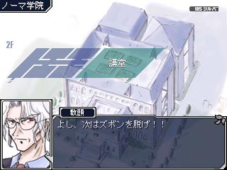

シルバーセカンド開発日誌
■
2006-06-24 (土) シルフェイド千夜一夜・ウィンドウ作り▼
最近リアル事情が忙しくなってきて（というか心理的な負担が大きくて）
なかなか負荷が高い状況です。
軽々と状況を乗り越えていける強い心が欲しいと切に願います。
それはいいとして、千夜一夜は現在ウィンドウ系の
システムを色々製作中です。
基本的には幻想譚バージョンをより使いやすくしたものを
作れればいいなあと思いつつデザインしています。
エフェクトやら何やらを飾り付けてウィンドウ表示に1秒かかるよりは
0.2秒でサッと出るようにするよう心懸けるのが信条。
その辺りは幻想譚と変わりませんのでご安心下さい。
プレイ速度を3倍速にするツールを使わなくても
快適プレイできるよう頑張りたいと思います。
ちなみに、今回は幻想譚でいうところの冒険の履歴にあたる、
主人公たちの恥ずかしい日誌が見られる予定です。
（画面左上辺りのコマンド一覧の「日誌」）
個性アリの主人公ならこれができるじゃん！と思いついた
ネタのしどころポイント、精一杯考えたいと思います。■
2006-06-18 (日) シルフェイド千夜一夜・色々ネタ出し中▼
3人目の主人公、修道女Xの開発コードが
ヘレンという名前になりました。
リクレールを神として崇拝する神獣教という宗派に身をおいており、
割と熱心に毎日お祈りをかかさないような人物です。
夢に神様（リクレール？）が出てきて理力を授かるとか、
そういうちょっと神秘な展開になりそうです。
で、よりによって授かった理力が「増幅」のみで
しかも他の人も誰一人としてフォース使えなくて、
授かった力のあまりの役の立たなさっぷりに
エシュターみたいなガーン顔になるヘレン。
とかそんな展開が真っ先に思いついた自分がイヤです。
あと自作ツール＆プログラムなのですが、
まともにゲーム作り始めた今になってやっと
大量にバグが見つかったりしてウホーな状態です。
足りないと思った機能やコマンドを随時追加できるのは
もの凄く便利なのですが、やはりバグ直しが大変。
動作プログラムの方もきっちり動くか心配です。
やっぱりツクールで作られたものは、
一応プログラムとしてまともに動くというのが保証されているだけ
安心があるよなあとか思ってしまう今日この頃。■
2006-06-11 (日) シルフェイド千夜一夜（仮）に変更▼
待ち行列シミュレーションを行うことによって
トイレ待ちの人数をリアルに忠実再現！！
隅から隅まで徹底的にトイレにこだわった作品！！
驚愕のトイレアクションが君を襲うッ！！
洗濯してる最中にそんな売り文句が頭に浮かびましたが
ダメゲーム風味全開です。なんだトイレアクションって。
それはそうと、主人公が3人選択式にすることが決定したので、
仮タイトルをアルバート小紀行から『シルフェイド千夜一夜』に
変更することにしました。アルバート主人公独占ならず。
今週は、書き出したシナリオ中で必要そうな
キャラグラフィックやらマップチップやらを、
ドット絵ヘルパーさんに手伝ってもらいつつ
色々描いたり集めたりしていました。
ドット絵はそれらしく見せられないこともない、
という感じにはできますが
自身の絵の技術と同様、基礎もクソもないので
どうにも付け焼き刃です。
ドット絵をパッと見て
「ああ、これは××だな」と分かればいいのですが、
小さいがゆえにときどき分からないことがあるのが困りもの。
プロの方が作るスーパーファミコンのゲームですら、
ときどき判別不能な物体が混ざっていたりします。
しかしそんな中でも、達人はときに数ドットのかたまりで
何かを表現してしまうからスゴい。何とも匠の世界です。
特にアニメーションは難易度高め、ゼロから描くのは至難です。
上手に描けるようになりたいと思いつつ、今日もポチポチ
ドット絵を打っています。■
2006-06-04 (日) 開発要項まとめ中▼
ここ一週間ずーっとノートにシナリオの流れ図を書いてみたり
基本的なフラグメモ書いてみたりするうちに
主人公を3人から1人選択するシステムになっていました。
このままだとタイトルがアルバート小紀行ではなくなりそうです。
シルフェイド千夜一夜とかそんな名前の方が合ってるかも。
とりあえずRPGとして最低限の要素だけ詰め込んでみて
よしこれくらいならゲームとしてそれなりだろと思って寝て
今日見直してみたら、明らかにシルフェイド幻想譚並みの
規模になっています。どうしよう。
一応、シナリオの位置づけとしてはシルフェイド幻想譚の
ストーリーの正当続編的なものになりそうです。
シナリオが続きといっても、もちろん幻想譚をプレイしなくても
問題ない程度の関連性です。
なお3人の主人公の内訳は、
1.傭兵（アルバート）
2.学者（バルト ※セトの祖父）
3.修道女X（名前未定）
という感じで、それぞれ持っている能力が違ってて
注目する情報や与えられた使命、
および出会う人物が異なってきます。
開発時の問題は、幻想譚のときは主人公が1人だったので
会う人のセリフも一通り（あっても男女差で2通り）で済みましたが、
これで作ると3人とも違う人物なのでセリフが
幻想譚のほぼ3倍必要になりそうということ。
（例えば買い物一つでも、修道女Xが酒場でお酒を
買おうとするとツッコまれるとかアルバートは飲めないとか）
この辺りは面白くしどころですので気合い入れたいと思います。■
2006-05-28 (日) アルバート小紀行（仮▼
裸で逃げてください。
自作エディタ＆動作プログラム、
まだまだバグがいっぱい出たりしてますが
全部プログラムで組んでも全然問題なさそうな予感です。
将来的に、この技術はシミュレーションRPGやら
アクションやら色々応用できそうなので
去年よりはちょっと進歩した感じです。
が、肝心な部分の開発作業に入ってやっぱり思い出すのが、
「RPG作りで一番大変なのは考える段階」だということ。
全体像を考え、イベントフラグをどう組むか
ビッチリ考えておかないと非常にマズいということを
幻想譚開発のときに思い知ったので、
今度はより面白いRPGが作れるよう、
準備をしっかりしたいと思います。
それにしても主人公がしゃべるRPGって
簡単そうで微妙に難しい予感です。
というよりは、「フリーシナリオ」と「しゃべる主人公」の
食い合わせが悪いのかもという感じもしてきましたが、
それならそれであまり勝手に色々しゃべらなせなければ良いだけで
でもアルバートなのにしゃべらないってそれどうなのよという
何とも言えない矛盾。
病気の人を見たアルバートが「これは絶対に助けねば！！」と
言ったとしても、プレイヤーとしては別にどうでも良かったりすると
無闇に空回りするので、この辺りは気を遣わないと
微妙な事態になりそうです。
もしくは逆にアルバートの意図に反したことをしようとすると
「お、おい無視していいのか！？」とかモニターの前の人に
ツッコミ入れたりしてもいいかもしれません。
これは主人公≠プレイヤーということを徹底重視するパターン。
一番危険なのは主人公＝プレイヤーという扱いでありながら
主人公キャラが（悪い意味で）暴走するケース。
途中から主人公の思考についていけなくなって、
何か微妙に冷めた目で主人公を見るのは悲しいです。
それを笑いにするならまだしも。
どんな主人公にも、適材適所のシナリオや表現があります。
料理と同じで、寿司にマヨネーズかけてもマズいけど
カラアゲにかけるとおいしいとか、そんな感じで
いい組み合わせというのがあります。
（たまにマヨネーズだけでもおいしいという人もいるでしょうけれど）
逆に混ぜると最悪になるトッピングもあるので、そういう点で
ゲーム作りは難しかったりします。しかしそこが面白い。■
2006-05-20 (土) アルバートは人前では真面目なんです▼
ナダさんですがなんだかイマイチ。
絵をほとんど描かないので、すぐ下手になってしまいます。
小紀行、色々考え中です。
システムは幻想譚と同じく時間経過型＆
割と半フリーシナリオRPGを予定。
バトルシステムはひょっとすると
見聞録システムになるかもしれません。
小紀行（仮）は、時系列的には
アルバートがノーマ学院を卒業したか何かで
フォーンの街を離れたばかりの頃の物語です。
トーテムもなし、戦いに関してもひよっこ脱却前という感じ。
今回も幻想譚同様、アルバートが裸で走り回ります！（たぶん）■
2006-05-13 (土) アルバート小紀行（仮）▼
ツール＆動作プログラムはほぼ完成したので、
いよいよグラフィック製作の段階へ突入です。
アルバート幻想譚に先駆けて、
アルバート小紀行（仮）を開発予定です。
というよか、もしかすると小紀行にアル幻が付属する感じに
なるかもしれません。
実を言うと、アル幻は溜まってるネタが少ないので、
面白いところだけ抜粋・編集すれば10分程度の連続ミニ劇場（？）を
何回かやった程度であっという間に使い切ってしまいそうで、
この状況でまともに一本作ろうとすると
面白さの密度が薄くなりそうな予感がするため、
アル幻を「オマケ的存在」まで降格させた方がいいかなあと
思い始めてきています。
その場合、たぶんメインはシル見世界をベースにした話になりますが、
そうすれば幻想譚とは逆にシル見キャラを出せるようになるため、
傭兵になったアルバート＆旅のナダのコンビの話とか
それはそれでイケそうな予感がします。
何はともあれ、ネタがあって、「この規模なら面白く作れそうだ」と
思う分を適度な規模でバッチリ開発するつもりです。
一応、次回作は主人公がアルバートなのは
間違いないということで。シルフェイド見聞録6、ようやく完成＆公開いたしました。
そして時間ができたので、来年度のために
色々とお買い物しました。
ここから下は購入したブツ一覧。
【新しいパソコン】
シル見公開の次の日に注文したパソコンが届いたので、
ようやく半壊PCでの製作からオサラバです。
起動するとシステムメモリが常時60%も余ってるのに大興奮！
動作も軽くて素晴らしい！
（これまでは1GB入ってるのに、どこか壊れたのか256MBしか
認識されなくなり、常時90%以上使用中だった）
ついでに4000円で買ってきた安物キャプチャーボード付けたりして
テレビを見られるようにしたのですが、
今使ってる1987年6月製造の携帯テレビ（※全然携帯じゃない）に
比べるとノイズはないわアナログでチャンネル調整しなくていいわで
非常に便利です。これが近代化ってやつですね！
しかも解像度が高くなったおかげでPS2のゲームで
ミサイルの残弾数（数字が小さい）が読めるようになりました。
また別のPCの画面を取り込むこともできるので、
自分のゲームの動画も撮れるかもしれません。
とまあ色々といいことづくめだったのですが、残念なことに
このPC、ペンタブレットを刺す差し込み口がないことが判明。
さすがにペンタブは5年前のものなので合わなくても仕方ないのですが、
買い換えるとなるとお金が飛んでいきそうでウホッホー。
【本・参考書】
大きな書店に行って、本やら参考書やら買って来ました。
・『VisualC++ .NET入門』
（分かりやすそうだったので手始めに）
・『VisualC++ .NET 逆引き大全500』
（何ができるのかを広く浅く知るために）
・『とにかく短時間で仕事をする！コツ』
・『楽しそうに生きてる人の習慣術』
他にもゲームプログラミング系の参考書をいっぱい
見つけたのですが、RPGツクールXPのスクリプトの全体を
理解した人ならあまり要らなさそうです。
個人的に、ツクールXPにデフォルトで入ってるスクリプトは
ゲームプログラミングのお勉強をするにあたって
かなりオススメだと思ってます。
今後の予定はアルバート幻想譚ですが、
RPGツクールXPを脱却するかどうかを今も検討中です。
ツクールXPを止めても問題無い点として、
・RGSSスクリプトで動作を組んできた
知識を活かしてそのままDirectXで作れる
という点があるのですが、問題として
・マップエディタやイベントエディタ（要はツクール）を
自分で作らねばならない
という点が浮上してきます。つまりWindowsアプリケーションを
作る知識もないといけなかったワケです。
製作日誌1月28日の頃はそんなの絶対ムリ！と思っていましたが、
実際作ってみると何だかイケそうな気がしてきました。
参考書読みつつ勉強込み累計50時間くらいで作ってみたのがコレ
↓
自作マップエディタ 3層対応とか範囲指定とかツクールXPのほぼ真似！

※ここではツクールXPのマップチップを使ってますが、
規約によりツクール素材はツクール作品以外で使えなくなるので
実際はマップチップも全自作にする必要有り
今のところマップチップを配置して、保存・読み込みする
機能があるだけですが、ここまでで大量の知識が身に付いたので
イベントエディタも勢いで作れそうな気がします。
ちなみに、RPGツクールXPのヘルプには、マップデータが
どんなデータ構造で保存されているか全部載ってるので、
ゼロからプログラミングするにあたってメチャクチャ役に立ちました。
正直言って、初心者の私にはこれがなかったら完全自作なんて
考えられなかったと思います。感謝しながら勉強させていただきます。 ■
2006-03-12 (日) シル見6まもなく完成……予定▼
落書き 幻想譚シズナ
シルフェイド見聞録シークエンス6は順調に
完成に近付いております。
あと少し作って完成で、テストプレイして修正して公開、
という状態で、進行度で言うと95％くらいの状況です。
それはそうと、調べてみたら
シークエンス5からすでに2年半くらい間が空いています。
その間にシルフェイド幻想譚とシルエットノートが
完成したわけで、何だかんだ言って色々やってきたなあ、
と感慨にふけったりしています。
シークエンス6は、戦闘が全くできないというのも寂しいということで、
ちょっとだけ戦闘訓練ができるようにしておきました。
リスバトルと同じ要領で、ナダさんが
果てしなく強くなっていきます。
それと連絡BBSにあったのですが、
匿名掲示板などでの議論やネタバレ（？）が影響して
シェアウェアに損害が出るんじゃないかと心配してくださる方が
いらっしゃるようです。その気持ちは本当に嬉しいのですが、
作者としては、損害の心配なんて作者だけがすればいいと思っています！
特に、せっかく自由な匿名掲示板なんですから、このサイトの
利益にならない事もいっぱい書けないと面白くないでしょう。
「普通のコミュニティで言えないようなこと」が言えて、
「普通のコミュニティで語られないような闇の部分」を知りたい人が
集まるのが、匿名掲示板の持つ役割でしょうし（たぶん）。
ところで連絡BBSに書いてあった、うちの作品について
議論されてるスレッドを見てみたら、1番の書き込みに
「公式でのネタバレ解禁日を厳守しましょう」とか書いてあって驚愕。
そんなことわざわざ守らなくていいじゃん！とか思うんですけど
どうなんでしょう！ 2ちゃんねるって無法地帯って聞いたのに
やたら真面目です、ありがとうございます。
けれどこの前、医大の教授さんと会ったとき、医学論文を訳すときに
2ちゃんねる（ツーチャンネルって言ってました）も
ちょっと活用してるとおっしゃってた気が。
専門的な話を議論するときには匿名掲示板も便利なんでしょうか。
時間ができたら色々興味が沸きそうな掲示板を回ってみたいです。
シルフェイド見聞録 教頭発言
シルフェイド見聞録シークエンス6は
ようやく完成率80％オーバーという感じです。
量としてはマップデータで100KB超の段階で、
目標は120KBくらいです。
それはそうとシルエットノート二次創作の方が
盛況すぎてなかなか読む暇がありません。
休憩の間にちょろちょろとは読ませて頂いているのですが、
面白い作品が非常に多くて嬉しい限りです。
個人的には、本編のパロディ的な短めの作品が好きです。
ですが、まさかここまでいっぱい来るとは思ってなかったので、
今度また二次創作機能を実装するのなら、
遊ぶのが楽になるようにゲームの方から
二次創作データをダウンロードできるようにしたいと思います。
インターネット関係のプログラミングができるようになれば
色々とユーザさんに役立つ機能が作れそうなので
今からガンガン勉強したいと思います。
目指すはオンライン対戦？
Copyright © SmokingWOLF / Silver Second
 カテゴリ: 開発日誌
カテゴリ: 開発日誌 カテゴリ: 開発日誌
カテゴリ: 開発日誌